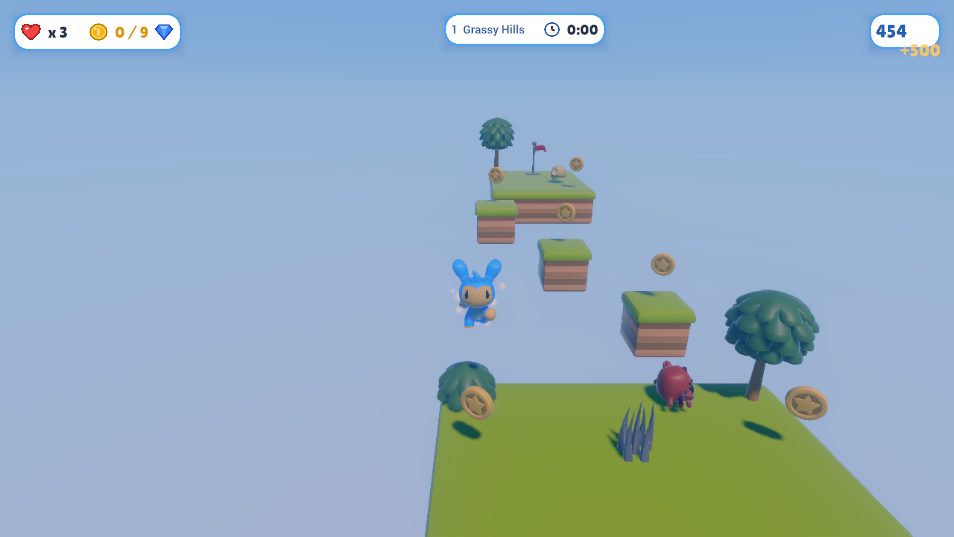
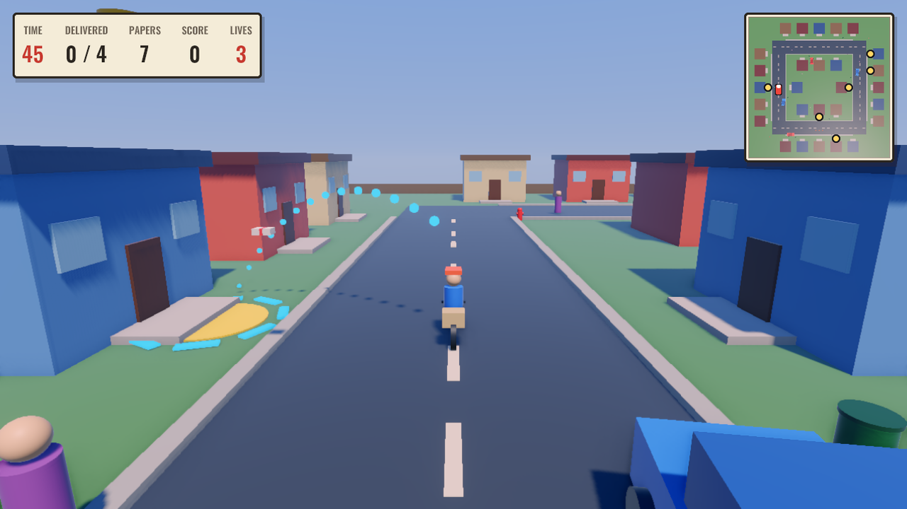
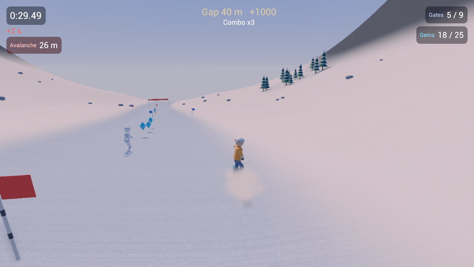
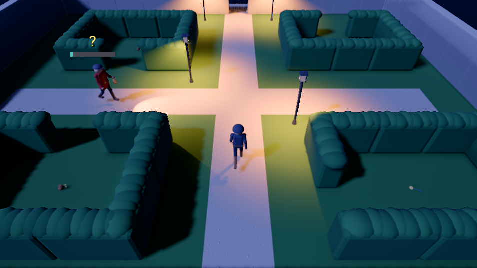

GameEngine Demos
Games made with GameEngine, running in your browser on WebGPU.

Sky Hopper
A 3D platformer across five floating islands: collect coins, stomp crabs, skulls and bees, dodge saws and spiky balls, and reach the flag. Three lives for the whole run; stars and best scores are saved in your browser.
Keyboard: WASD to move, Space to jump, Escape to pause. A gamepad works too.
PlayAbout 24 MB to load. Needs a browser with WebGPU (recent Chrome or Edge on desktop). Credits

PaperKid
An arcade paper route: ride round a town block and throw papers onto the subscribers' porches before time runs out, dodging cars, pedestrians, bins and cones. Five blocks, three lives, and a minimap of the block.
Keyboard: WASD to ride and steer, Space to throw, Escape to pause. A gamepad works too.
PlayAbout 28 MB to load. Needs a browser with WebGPU (recent Chrome or Edge on desktop). Credits

Snowline
A snowboard time trial with tricks: carve through slalom gates, take the gems, and hit the kickers for spins and grabs. Three courses opened by medals: an open Meadow, a Forest with a shortcut through the trees, and Ridge, with a gap over a crevasse and an avalanche chasing you down. Medal ghosts ride beside you, and your best run becomes your own ghost.
Keyboard: A and D to carve (and spin in the air), Space to jump, Left Shift to tuck, E to grab, Escape to pause. A gamepad works too.
PlayAbout 35 MB to load. Needs a browser with WebGPU (recent Chrome or Edge on desktop). Credits

Lamplight
A night-time heist in pure stealth: slip into a manor and take what each level is for without being caught. Keep to the dark (a meter shows how lit you are), put out lamps, throw pebbles to draw the guards' lanterns away, and pick locks while they look elsewhere. Four levels so far: the Gardens, the Stable Yard in the rain, the Ground Floor and the torch-lit Cellars, with checkpoints, loot, and a ghost medal for never being seen.
Keyboard: WASD to move, C to sneak, Left Shift to run, F to use (hold to pick a lock), G to throw a pebble, Q and E to turn the view, Escape to pause. A gamepad works too.
PlayAbout 25 MB to load. Needs a browser with WebGPU (recent Chrome or Edge on desktop). Credits